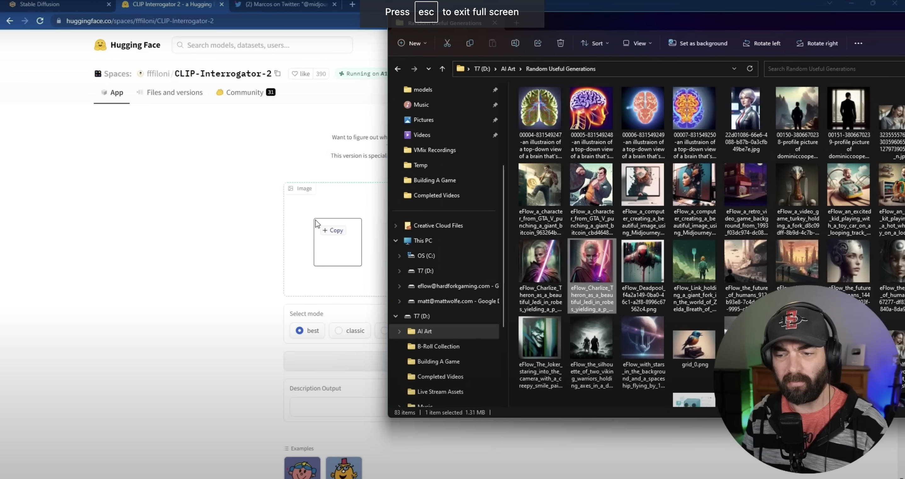
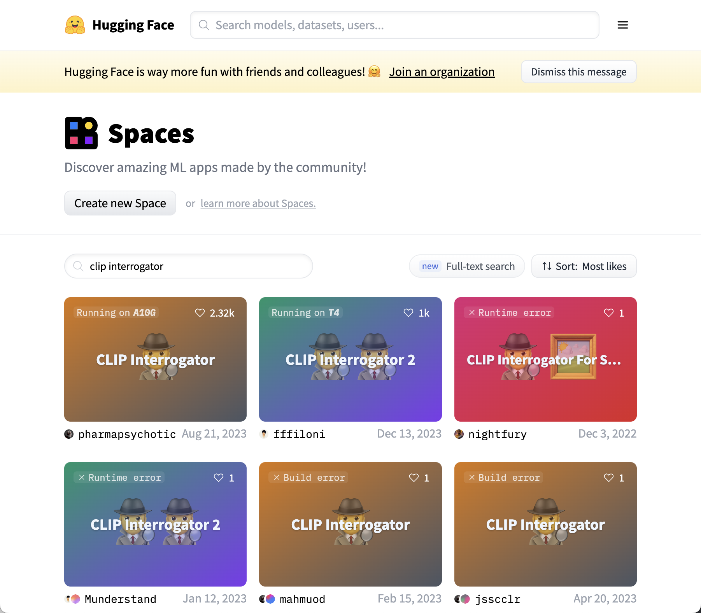
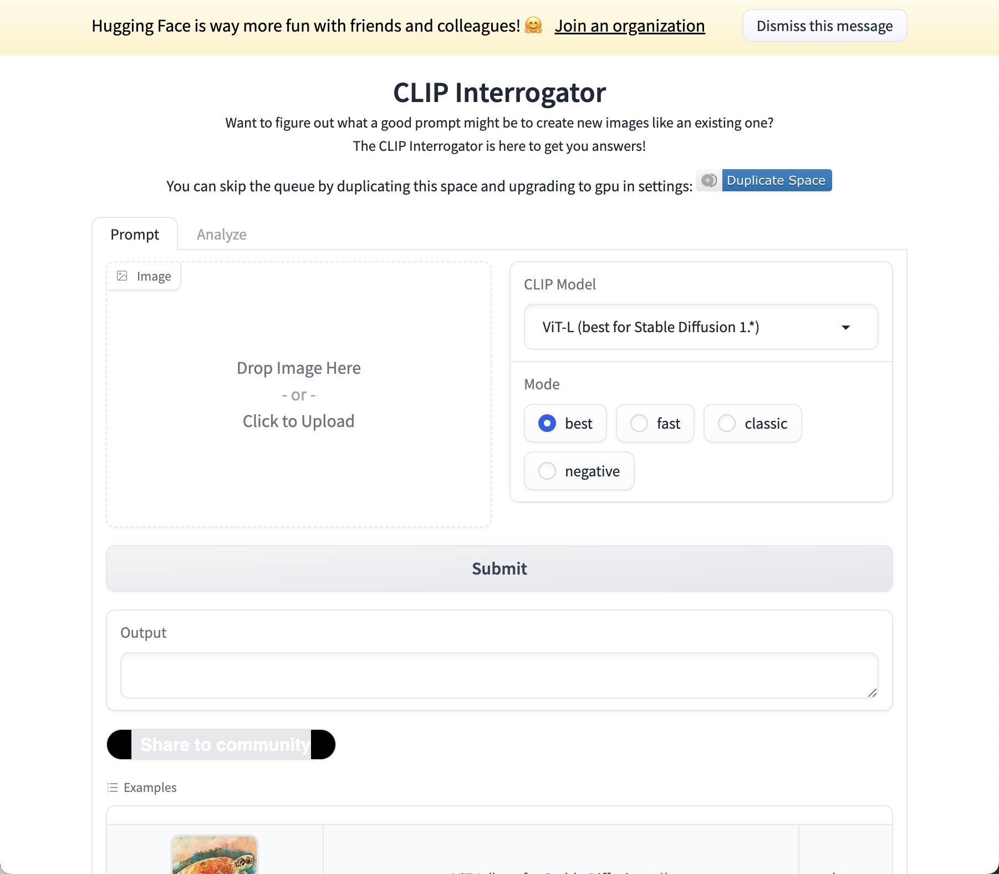
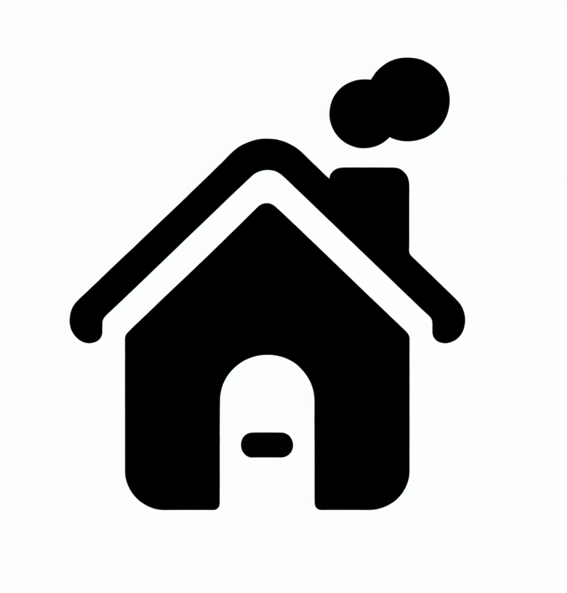
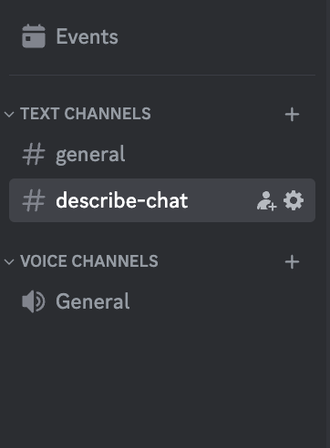
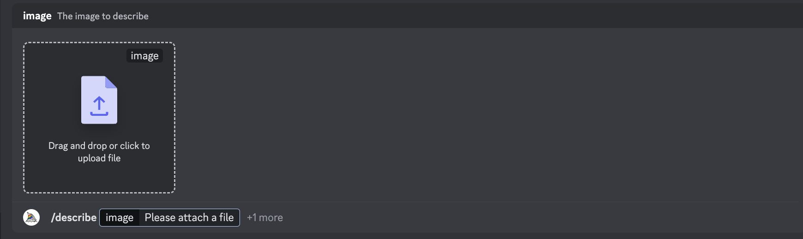
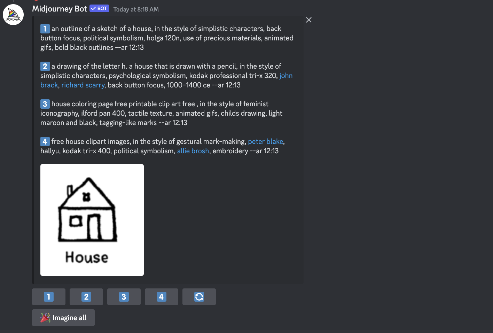
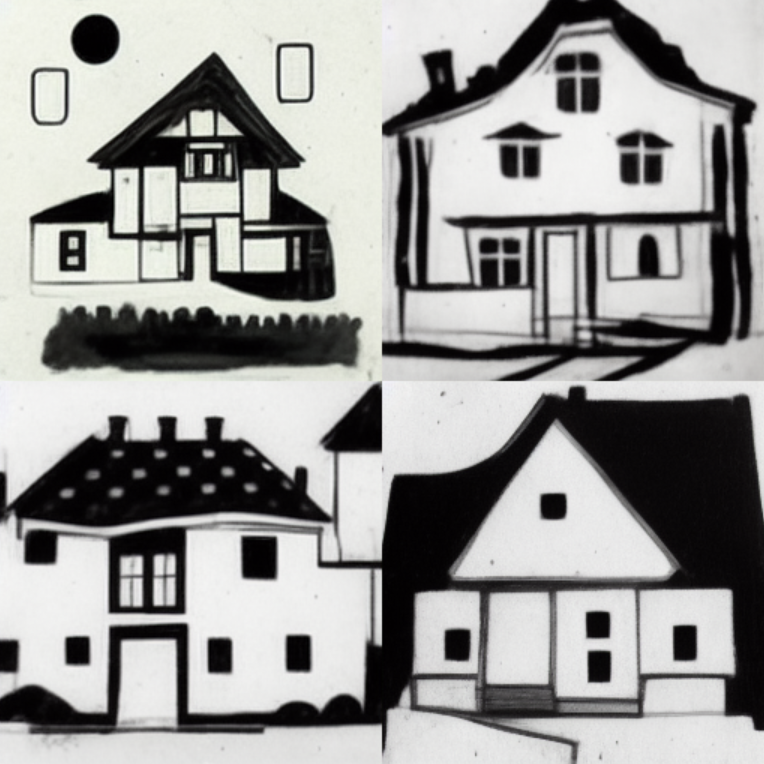
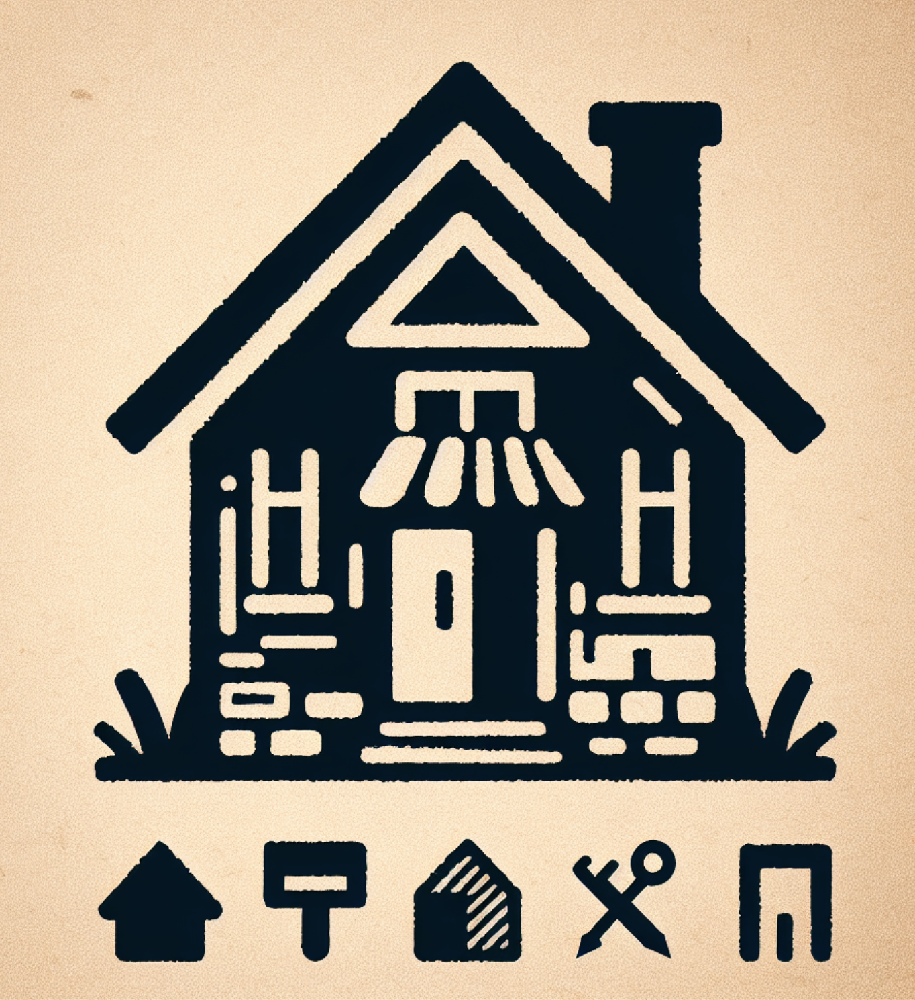

What’s The Prompt For That AI Image?
In Matt Wolfe’s YouTube Video, he teach us how to figure out the prompt used for one AI image.

But TODAY! I will show you how to create the same style as in that image!
No matter whether it is AI image or not!
You can try the following methods to replicate the same style AS YOU WANT!
CLIP-Interrogator in Huggingface
🟡 Step 1: Click the link below: https://huggingface.co/spaces
🟠 Step 2: Search for “CLIP Interrogator”
🔴 Step 3: Find the one has the most likes

❗❗❗Note that the CLIP Interrogator can be changed sometimes, please follow these steps to find the best CLIP-Interrogator!!!Note that the CLIP Interrogator can be changed sometimes, please follow these steps to find the best CLIP-Interrogator!!!
❤️ Step 4:Upload your image. 
Try CLIP-Interrogator in Huggingface !!
I want to create a set of stickers under the theme of office.
The style should be similar to: 
After I upload the image, here is the output from CLIP Interrogator: a black and white drawing of a house, pictogram, based on child’s drawing, by Itō Seiu, osr, easy to understand, low resolution, nonbinary model, portrait size, warm features, descriptive, full subject shown in photo, one house, scanned document, color image
✍ To test whether the prompt can generate the image you want, the best way is to put the prompt again, and see what you can get!
🚩 TEST1
After I edit some words, I got my final prompt for DALL·E 3:
Prompt: a black and white drawing of a house, pictogram, based on child’s drawing, easy to understand, one house
Output: 
Not bad! But probably need to be more like simple easy line arts since the image is not filled with black.
But, I still feel weird if I put ’ image is not filled with black’ in the prompt.
So I ask Midjourney for help!
Try Midjourney !!
🟡 Step 1: Create a new chat

🟠 Step 2: Type in ‘/describe’
🔴 Step 3: Upload your image!

All right! Here is what Midjourney generates! 
When I click 1️⃣2️⃣3️⃣4️⃣， it can show the prompts that Midjourney guesses.
1️⃣： an outline of a sketch of a house, in the style of simplistic characters, back button focus, political symbolism, holga 120n, use of precious materials, animated gifs, bold black outlines –ar 12:13 –v 3
2️⃣：a drawing of the letter h. a house that is drawn with a pencil, in the style of simplistic characters, psychological symbolism, kodak professional tri-x 320, john brack, richard scarry, back button focus, 1000–1400 ce –ar 12:13 –v 3
3️⃣：house coloring page free printable clip art free , in the style of feminist iconography, ilford pan 400, tactile texture, animated gifs, childs drawing, light maroon and black, tagging-like marks –ar 12:13 –v 3
4️⃣：free house clipart images, in the style of gestural mark-making, peter blake, hallyu, kodak tri-x 400, political symbolism, allie brosh, embroidery –ar 12:13 –v 3
✅ Some keywards that I get: outline of a sketch of a house, in the style of simplistic characters, bold black outlines, in the style of simplistic characters, clipart
Let’s try it!
🚩 TEST2
I choose the prompts in 1️⃣ to generate image for me in Midjourney

👉 Oh, it is still not as simple as we want. Image generation models doesn’t seem very capable of generating simple images.
🚩 TEST3
I also try DALL·E 3 using our previous prompt and keywords that we find in Midjourney
Prompt: outline of a sketch of a house, bold black outlines, pictogram, based on child’s drawing, easy to understand, in the style of simplistic characters, clipart
Output: 
Response: Craft an image that showcases a house. The house should be sketched with bold, black outlines inspired by a child’s drawing. This should be a simple, easy-to-understand depiction reminiscent of pictograms. It must not be too detailed yet should not fall into abstraction, closely resembling pictographic elements found in clipart style illustrations.
👉 AAAAAAA! Still NOT GOOD!!!
I think the response follows what I requires very well…
🔚 Conclusion
In the next post, I will use Midjourney to generate the similar style!! Go and check that out!!!